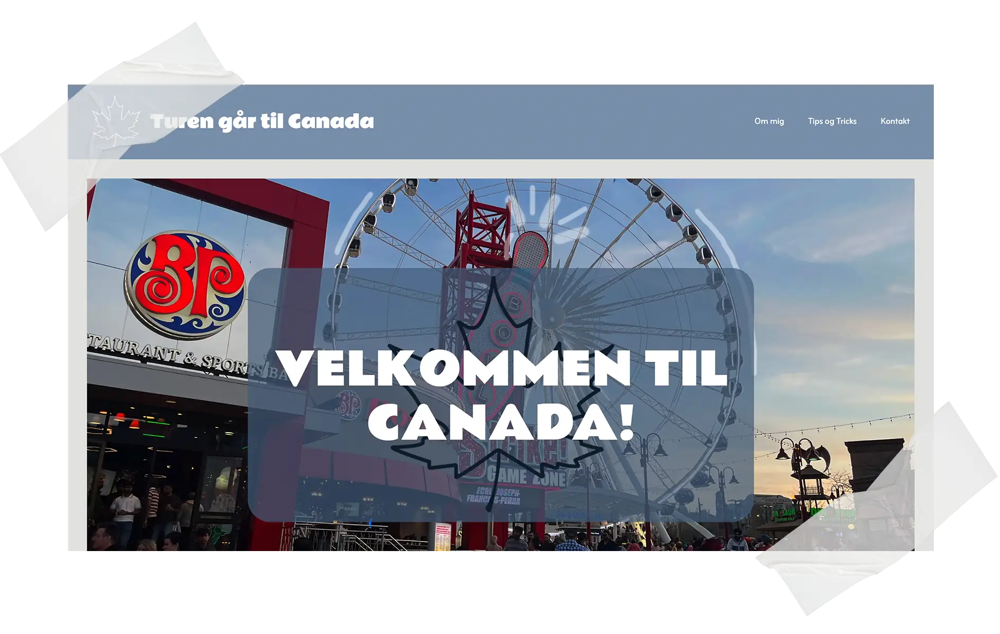
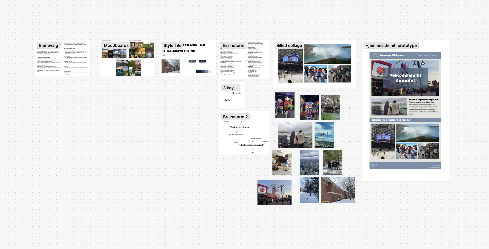

Tema 5 - Grundlæggende Indhold
Turen går til Canada
Tema Beskrivelse
I dette tema har jeg arbejdet med indholdsproduktion fra idé til færdigt resultat, herunder foto, redigering og animeret grafik. Ud fra tidligere erfaring fra andre teamer kunne jeg lave en lille sandkasse site, med fokus på redigering.
Opgave Beskrivelse
Under dette tema blev vi sat til at lave et sandkasse site. Emnet valgte vi selv, det skulle bare været et hvor vi selv kunne eller havde taget billeder selv. Dette var på grund af at vi skulle fokusere på billeder og redigering af det på dette site.
Proces, løsning og resultat
I denne opgave var der mest fokus på billeder og redigereing, men design processen var stadig over projektet, for at jeg kunne vise hvad jeg har lært på det forrige temaer.
Jeg valgte at lave min hjemmeside omkring min tur til Canada i 2023, da det er en tur jeg havde taget rigtig mange billeder på, så jeg tænkte det kunne være en fed opgave.
For at finde designet til siden lavede jeg moodboards ud fra nogle værdiord som jeg synes passede stemningen af min tur til Canada. Herefter lavede jeg et style-tile for at finde typografier og farver der passede til mine billeder og stemningen.
Efter brainstormede jeg nogle ideer der kunne være på siden, samt fandt billeder der skulle være i min foto collage på siden. til sidst lavede jeg min hi-fi prototype af hvordan jeg gerne ville have den til at se ud. Wireframe var allerede givet til opgave. SÅ det var bare at sætte det op. Alt dette kan man se på min Figma dokumentation som man kan komme ind på ved at kligge på billedet.
Til sidst fik jeg kodet hjemmesiden med HTML og CSS, og fik den lavet responsiv til både desktop og mobil.
Besøg siden →